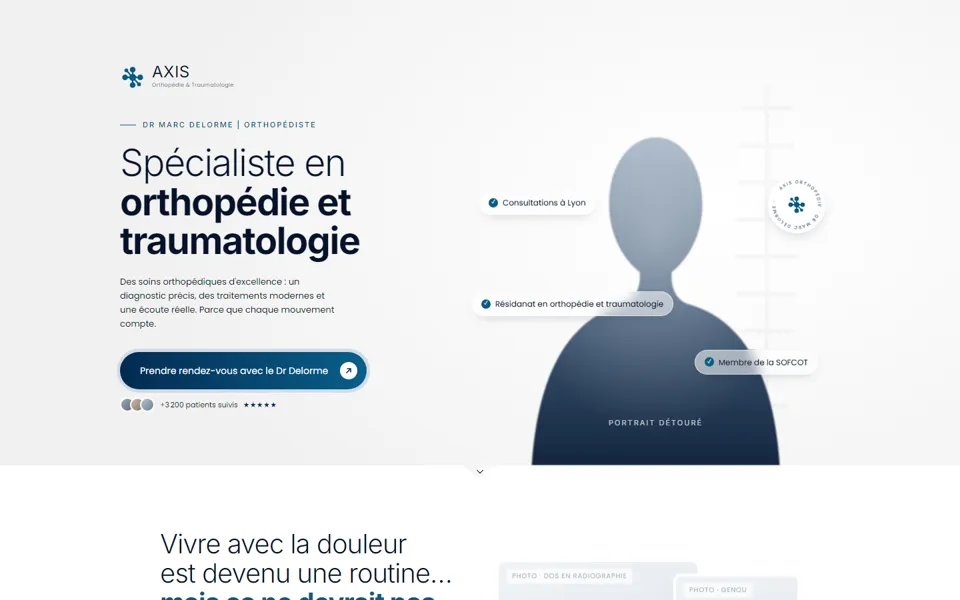
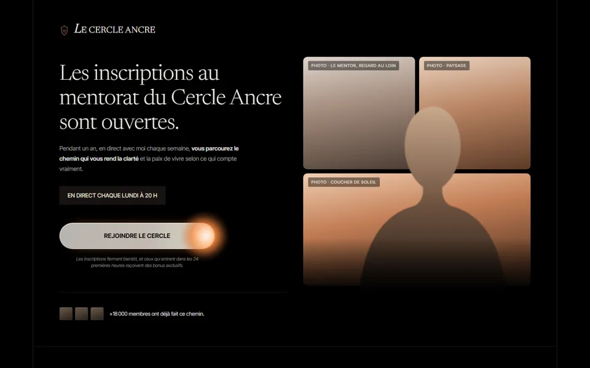
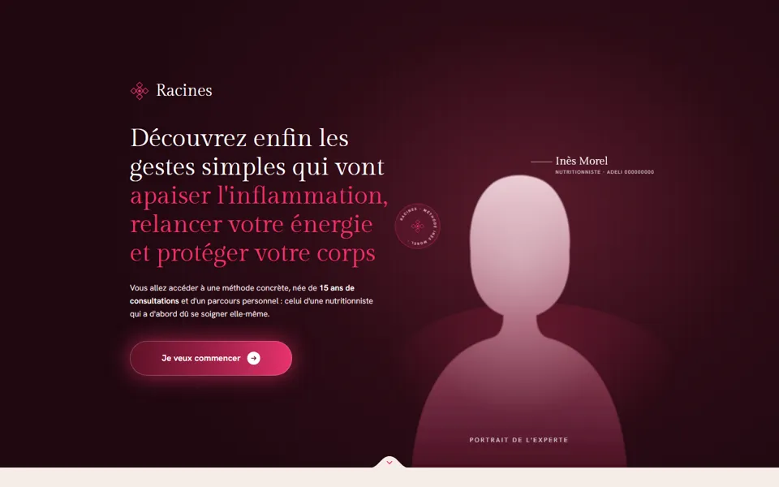
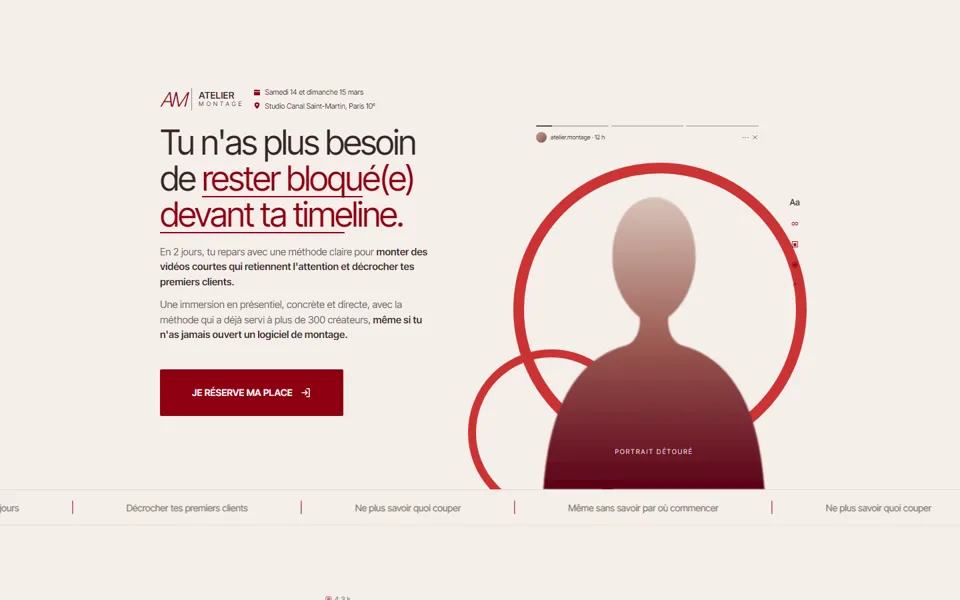
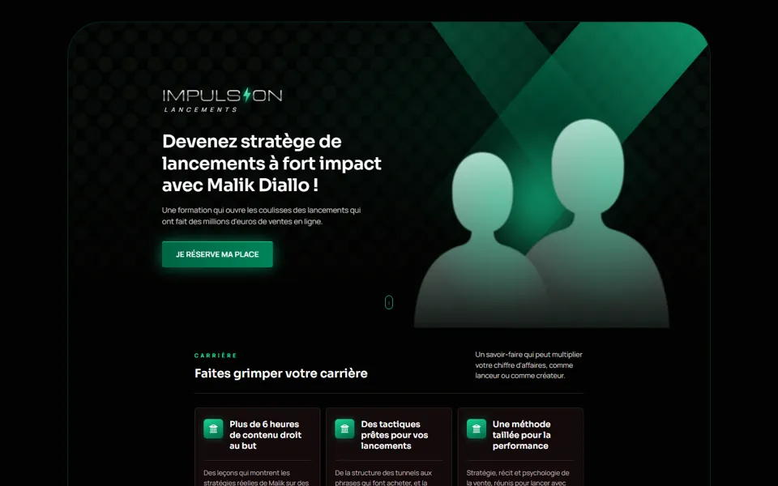
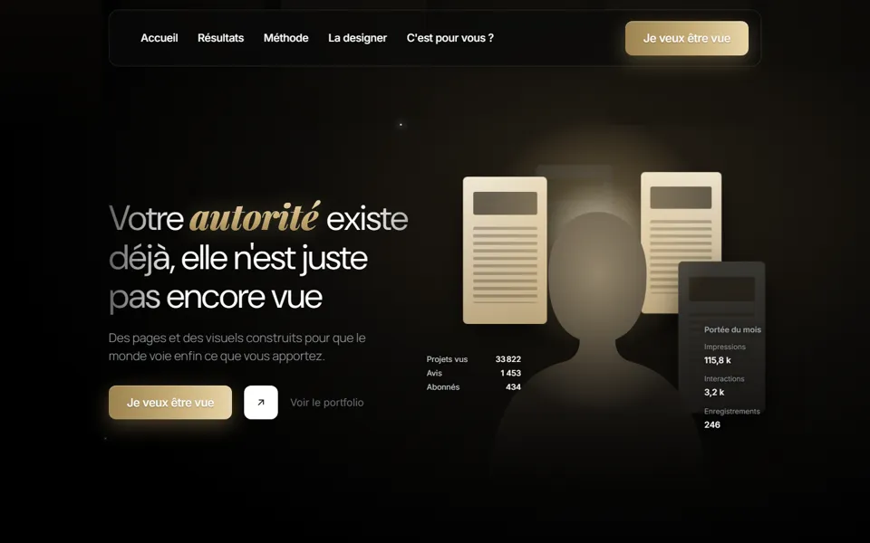
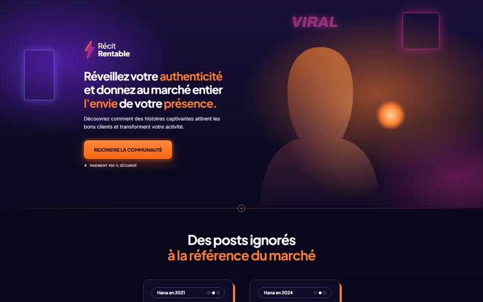
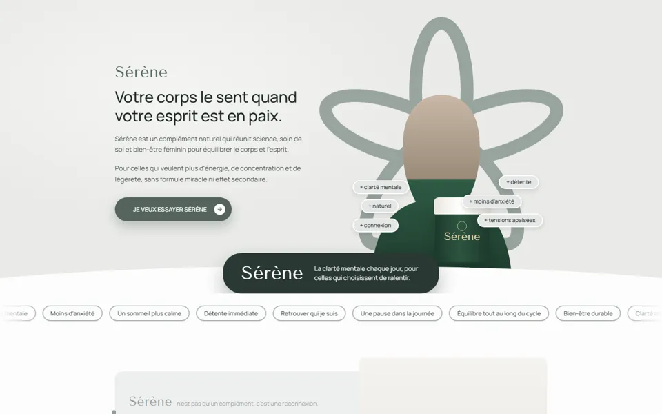
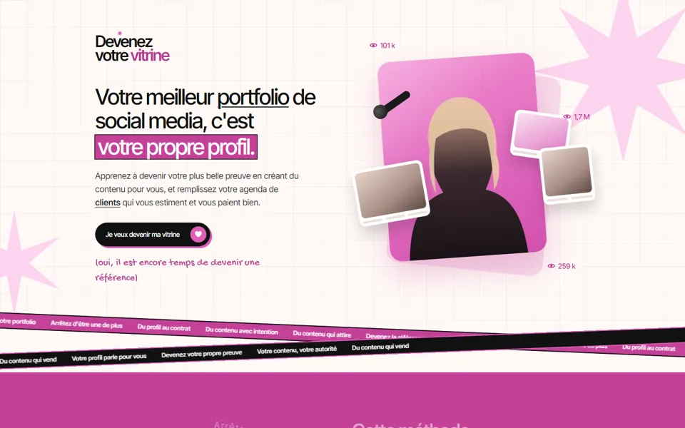

Médical premium
↗Un cabinet de spécialiste qui rassure en 3 secondes : blanc cassé, bleu nuit, une seule section sombre.

Luxe sombre
↗Un mentorat haut de gamme : noir profond, beige pierre, serif fin et braise cuivrée.

Éditorial chaud
↗Le lancement d'un e-book santé : nuit bordeaux, crème, mot clé en serif framboise.

Magazine affirmé
↗Une formation en présentiel : crème, rouge sang, mot géant derrière la photo.

Néon vert
↗Une formation business : noir profond, vert sapin et néon, cartes vitrées, un duo en hero.

Lumière dorée
↗Un designer qui vend son autorité : noir, une seule lumière dorée, une carte de prix qui déborde.

Récit néon
↗Une communauté de créateurs : bleu nuit, orange néon, avis floutés qui se révèlent au survol.

Sauge apaisée
↗Un complément bien-être : vert sauge, gris perle, pastilles arrondies et un pot qui revient partout.

Rose scène
↗Une méthode pour social media : crème quadrillé, rose vif, blocs noirs, rubans et bords déchirés.